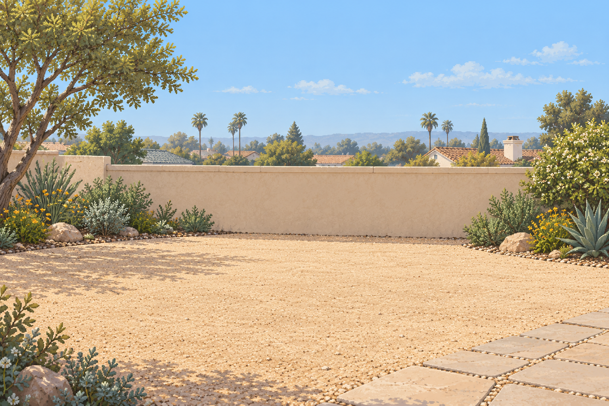
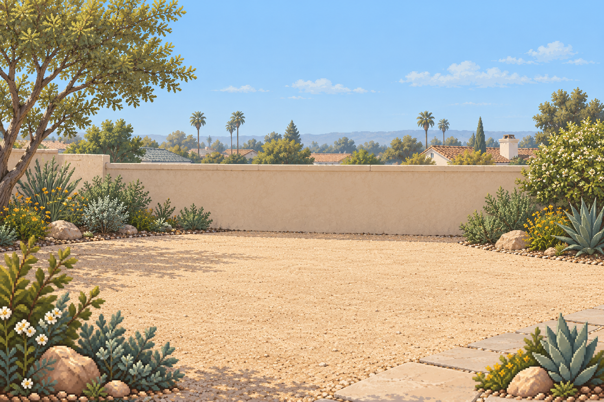
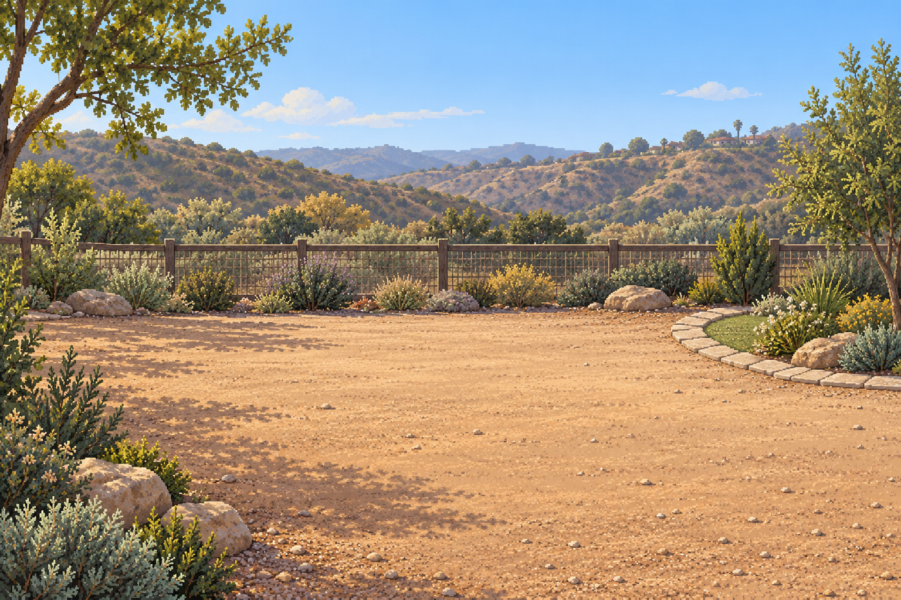
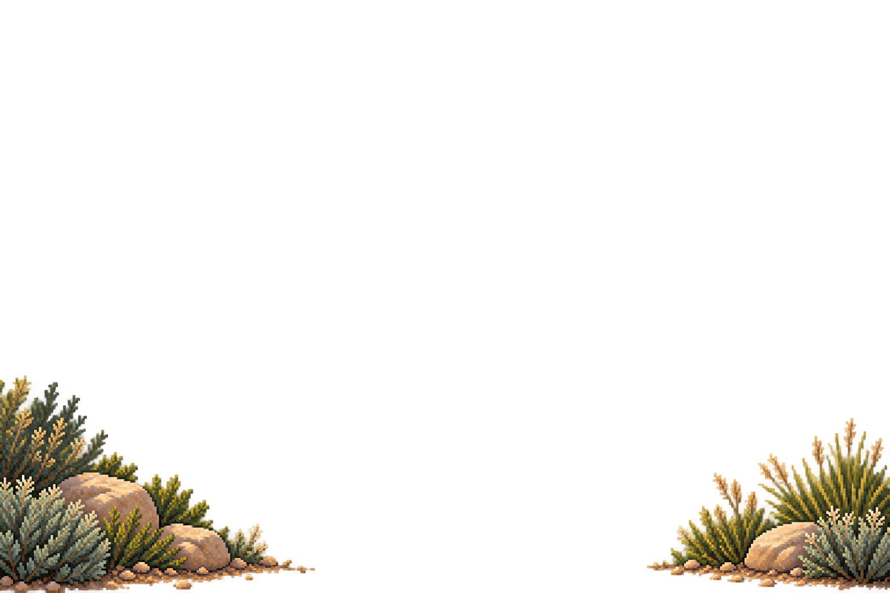
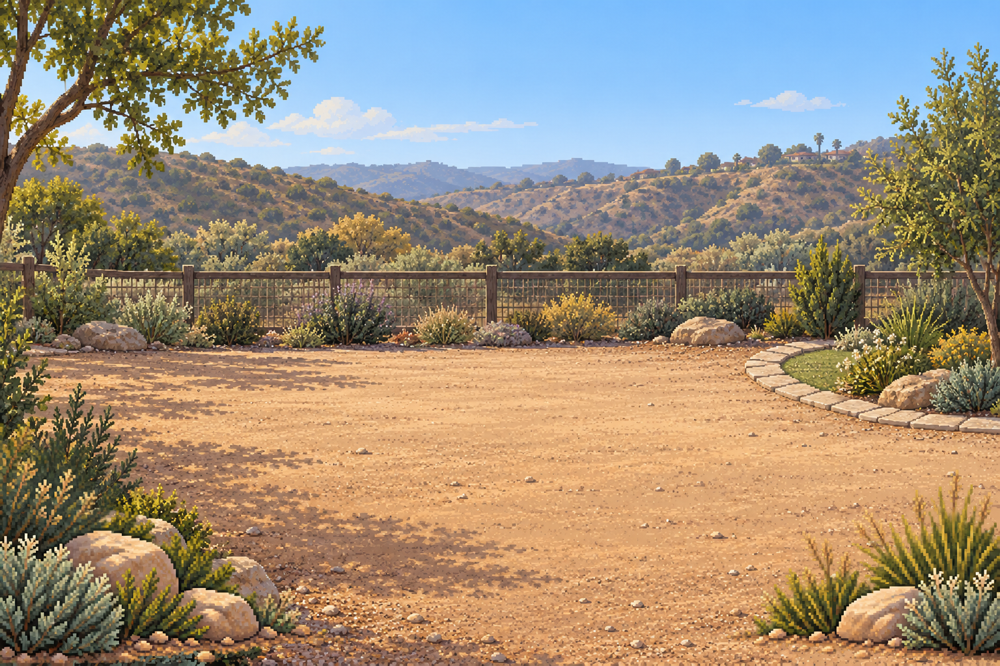
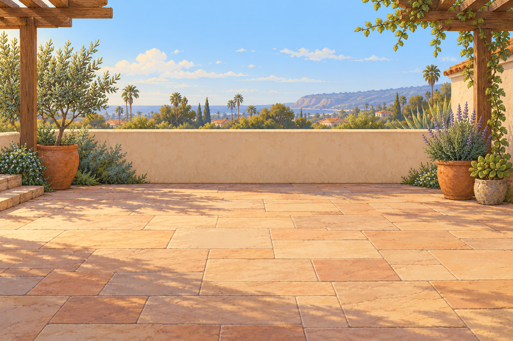
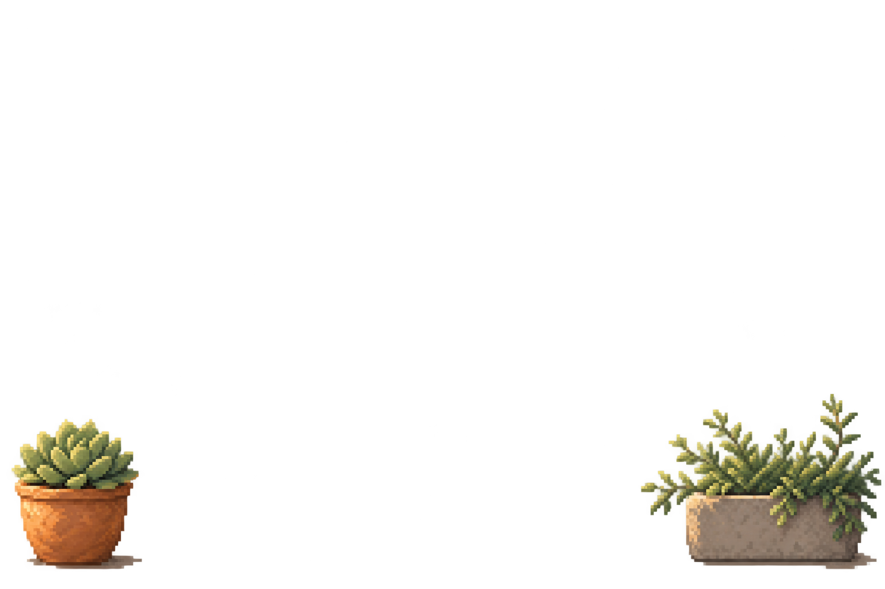
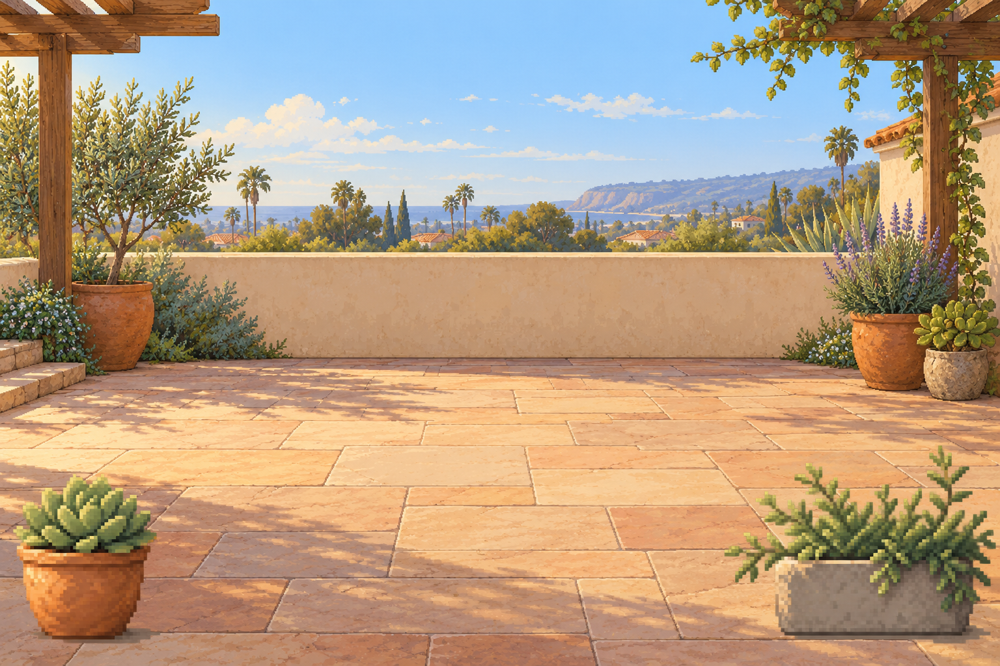

3 yard concepts, 6 generated originals, and 6 extracted corner sprites. Reviewed candidates; style approval and Mac verification pending. Bases are flattened. Foreground layers were independently generated. Composites are review previews, not additional generated art. No application integration, animation or physics implementation.
Known defects: painterly base texture, soft overlay halos/faint alpha, approximate base/overlay alignment. Existing Library reference pixels could not be retrieved (HTTP 403); written style direction used.







